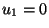
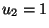

Système de réactions
Modèle déterministe
états stationnaires :
On pose:
ce sont des paramétres positifs.
Ce système conduit à
Soit .
Alors
L'équation (![[*]](crossref.png) ) a les racines
lorsque
) a les racines
lorsque
est satisfaite.
Tant que
, ceci ne change pas la généralité car un changement de
 est un changement d'échelle sur
.
est un changement d'échelle sur
.
En écrivant la fonction , si ,
alors .
Ceci justifie les conditions suivantes:
alors les deux solutions  et  sont stables , d'où le nom de bistabilité, et il existe une troisième racine instable où .
Modèle stochastique
Soit maintenant
 le volume dans lequel se passent les réactions.
le volume dans lequel se passent les réactions.
On note les nombres de molécules de dans ce volume. forme un processus de Markov de sauts.
Soient
Temps de sortie de l'état
Remarquons que l'état est absorbant.
On peut montrer que
Sortie de l'attracteur et absorbtion dans le deuxième attracteur en . C'est le phénomène de basculement. On remarque que atteignent des valeurs nulles plusieurs fois mais le basculement se fait uniquement lorsque aussi.